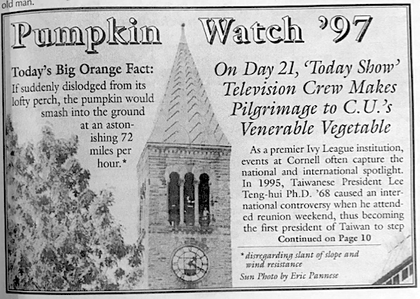
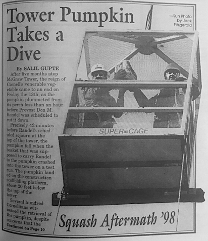

HOW THE PUMPKIN GOT ON THE TOWER!
By Farhad Manjoo
At first, I didn't really care about the pumpkin. No one did, not really.
Sure, it was curious -- suddenly one fall morning there was a tiny speck way at the top of the tall tower you walked by everyday. But it's not like it sparked an instant frenzy; you saw the speck and you maybe asked some friends about it, and one of them who'd heard from someone else would maybe say, "oh yeah, it's a pumpkin, kinda weird," and then you'd think about it a minute and go, "huh." And that was pretty much the whole story.
We were all very busy college kids, after all, but also: Those were different times! We didn't have phones! We couldn't snap pictures and create funny tweets and Stories and what-have-yous, we couldn't get the pumpkin on Reddit and BuzzFeed, sparking dumb posts about what Disney character the pumpkin resembled and whether the pumpkin was an alt-right meme yet.
Things didn't just become national news back then, is what I'm saying. It would take many days for most of Cornell and Ithaca to hear about the pumpkin on the top of the tower, and then weeks for the mystery to spread around the country. The first New York Times story about the pumpkin was published nearly three weeks after it was first spotted; after that, there were a few national spots, including the "Today Show." You knew the pumpkin was something more than just a local curiosity once your parents started asking about it.
It was only as the attention grew -- and as the pumpkin kept clinging to the tower -- that people became really invested in the thing.
_______________
You'd think about it a minute and go, "huh." And that was pretty much the whole story.
_______________
Again, no phones! There wasn't a lot of other stuff competing for our attention. As you walked through campus you basically just looked around at the buildings and the sky and the other people.

Happening "Today" | Three weeks after first pumpkin sighting, the Today Show arrives in Ithaca to document the mysterious gourd
Day after day of these long, cold, Instagram-free-walks have a way of getting to you; eventually you find yourself getting lost in your own mind, and inevitably you ponder life's deepest mysteries. And in the fall of 1997, as you looked off into the distance every morning and kept catching that gourded steeple, one such mystery had to be, "Wait, how the hell did they do that?"
Twenty years later, I still wonder. A couple years after the pumpkin prank, when I was a senior and editor of The Sun, I got an email from an anonymous source who claimed to know how the pumpkin got up there. My report on his account -- first published in the 2000 Senior Issue -- appears below.

Splat | A botched attempt to remove the pumpkin results in mashed squash
I believe his story, but the source didn't give me the names of pranksters, including the name of the ringleader. So the mystery is still unsolved.
But you know what's awesome about today, versus 1999? Exactly, viral true-crime podcasts! Remember "Serial"? I'm thinking same thing, but with the pumpkin and the tower; we can even find a way to weave Casper into the story somehow, if that will help with sponsorships.
Or wait, I've got a better idea. How about a viral hashtag that encourages the pranksters to confess? It's been 20 years. They pulled off the best prank Cornell has ever known. Decades later, we can finally let them take a bow for risking their lives to give us 20 years of lonely pondering. Pumpkin pranksters, tell us who you are! #PumpkinAmnesty!
_______________
You knew the pumpkin was something more than just a local curiosity once your parents started asking about it.
_______________
. . . . .
Howdy -- I just laughed my ass off at the article y'all published on "how the pumpkin got onto the tower." Nice piece of fiction and speculation. Would you like to know the REAL story?
-- Excerpt of an e-mail sent to The Sun, Oct. 26, 1999
I salivated after reading this message. Seriously. Because even though dozens of jokers mail The Sun every day claiming something grand, and even though -- as editor in chief of the paper -- I'd learned to discount such conjecture, there would be no better coup for The Sun than finding the Pumpkin Prankster. And I wanted the paper to expose the fellow during my term.
You see, since the infamous gourd first appeared on the clock tower in the fall of 1997, The Sun has tried -- and failed -- to ascertain the identity of the prankster. The closest we or any other news organization ever got was speculation; and everyone we speculated about, from the University to certain fraternities and athletic teams, denied all involvement.
Chop chop | Perhaps the pumpkin came not from below, but above...
By the fall of 1999, we were obviously no longer investigating the story. But just before Halloween, we printed a light piece recapping the two-year-old mystery, a story which, in the end, said what everyone already knew about the pumpkin: That it was destined to remain an enigma, the kind of pseudo-freakish thing that is universally understood to be beyond human comprehension, like crop circles or Kid Rock.
But evidently, this light piece caught the eye of a University employee named Tom Cruise (not his real name). Indeed, it made Tom "laugh his ass off," and apparently for good reason: he knew who really did it.
"I was a housemate of one of the three individuals involved in this prank," he wrote, "and now that he has moved away from town I don't see any harm in setting the record straight on how they did it. I have details on the prank that were not released by the C.U. police, and could be verified by them to corroborate the truth of what I will tell you."
So I called Tom Cruise. And he told me the whole story: How three friends managed to captivate the campus with nothing more than some duct tape, wire cutters, some rope, and, of course, a bright orange pumpkin.
After we discuss his preliminary "demands" -- that I can't use his name, and that he won't give me the names of the perps -- he gives me his account.
He begins by describing the main characters, who I'll call Kennedy (the ringleader), Reagan and Nixon (the helpers). Kennedy was a Cornell student -- the two others were Ithacans. Tom says that Kennedy had pulled a similar prank in his hometown some years ago -- something involving a squash and a church steeple.
One imagines that when he came to Cornell, Kennedy saw the clock tower and knew then that he was put on God's green earth just to decorate its steeple. He probably became obsessed with this goal; and, Tom says, he began to look for a couple climbers to help him achieve it. He hung out at local outdoors-type stores, and after a while, he found his accomplices, Reagan and Nixon.
300 meters | Was the pumpkin flung from the far-away engineering quad via catapult?
When Tom talks about Kennedy, it's with unabashed awe; we should revere this guy, he thinks. Kennedy was brilliant, Tom says -- and do we need mention the cojones! "That night, he went up there early, when the chimesmasters were playing -- and he hid out there," Tom says.
Kennedy had planned the prank extensively, right down to picking the night based on anticipated wind conditions. And while he was up there, he could feel it -- this night was right.
"He stayed up there for about an hour," Tom says. "And when he left, he duct taped the door locks -- there are two -- on his way out, so that they wouldn't lock. Then he left, and they all met up, and came back at midnight."
"They came back with the pumpkin" -- which was a normal pumpkin ("no preservatives"), Tom says, bought from a farm stand on the side of the road, and cored.
Their equipment: a pair of wire cutters, and rope. And when they tried the doors, they saw that Kennedy's duct tape trick had worked --in no time, they were up there with the bells.
Tom says: "They hung out there for an hour. They figured, we're in here, we're safe...What do we do from here?"
They'd been confident before, Tom says, but now there were so close, and they wondered whether they should go through with it. Imagine the three go up there in the early autumn morning three years ago, shivering in the wind; they're on the verge of doing something fairly crazy -- a trick which could yield big payoffs, but which might also, in the worst case scenario, get them in big trouble, or get them dead.
They surveyed their surroundings. "When you're in the room up there -- I've been up there myself," Tom says, "[you'll see] there's a thick wire mesh above your head, which blocks off the pointed part of the room."
The wire mesh was the key -- break through the mesh, and they could get to the access hatch to the roof. "You can see it from Libe slope -- you can actually see the access hatch. The plan was to get through that hatch, go up the roof from there, place the pumpkin on top," Tom says.
"They look up at the grating, and see a padlock on it. And they freeclimb the interior beams to reach it -- three strong guys can do that. And they cut the lock with the cutter."
From there, Kennedy climbs up to the access hatch. "It was his maniac idea," Tom says, so he's the one to do it. He takes up one end of the rope -- the other end of which is attached to the pumpkin.
"You can't tell this from the ground," Tom says, "but the texture of the roof is made up of two-inch deep tiles. They're not incredibly solid, but it's going to provide excellent hand and foot holds. Though up there the winds are brutal -- even when it's sunny out."
And so, this is how it goes down. "Kennedy climbs up to the peak. He tugs on the rope to let them know he's up there. They send him the pumpkin on the rope. [When he gets it], he jams it on the damn thing, and then he climbs down."
_______________
A trick which could yield big payoffs, but which might also, in the worst case scenario, get them in big trouble, or get them dead.
_______________
And when he got back inside, they "laughed their asses off for fifteen minutes, and went and had a beer."
"And the next morning was when it started for the rest of us," Tom says.
On the phone, Tom Cruise sounds like a regular guy. He's maybe 35, and married, and happy -- he can't stop laughing. He works for Cornell in some office of some department, a job that he seems to enjoy but which nevertheless smacks of bureaucracy -- he has the word "technician" in his title. All of which is to say: Tom Cruise doesn't sound like the kind of guy who'd try to dupe some college students at a campus newspaper. He tells his story with surprising indifference -- he doesn't argue points, or take pains to convince me. He tells it, really, as if it's the truth.
Fee-fi-fo-fum | Did Hunter Rawlings stand up straight and place the pumpkin on the spire?
He says he's kept the story a secret for so long out of concern for the three fellows. After the pumpkin became a national sensation, Tom says, the three became scared of getting in deep trouble.
"Well why didn't they come out with it? The reason is these guys were afraid they were gonna get fuckin' arrested. All the papers were saying that the police were investigating. As far as I know they never were caught, or questioned, though."
"One detail I gave you," Tom says, "was about the padlock being cut off -- the newspapers never printed that the padlock had been cut off. So the police would have it. I don't know if they know the doors had been taped."
I called the University police, and I was able to confirm that the padlock had been cut. But the police did not disclose anything about the duct tape.
So as far as I'm concerned, this seals the case.
Tom Cruise solved the pumpkin mystery: Kennedy, Reagan and Nixon did it.